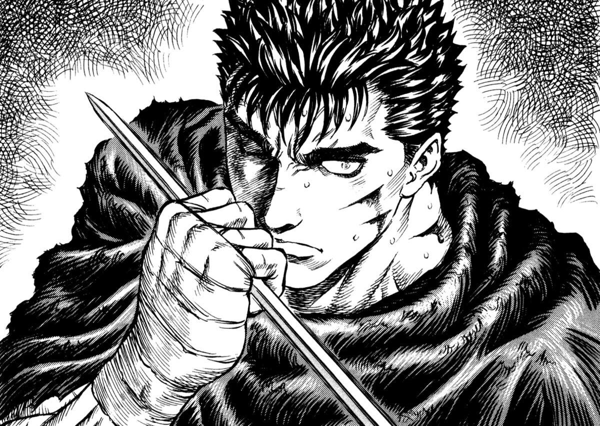
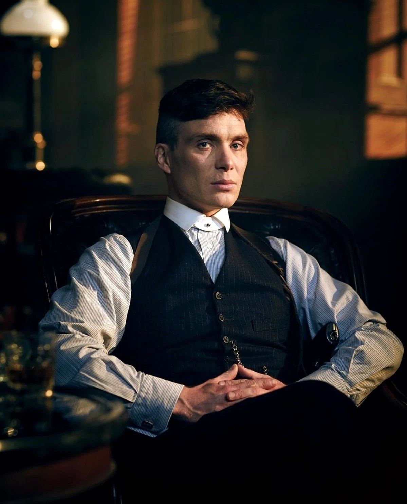
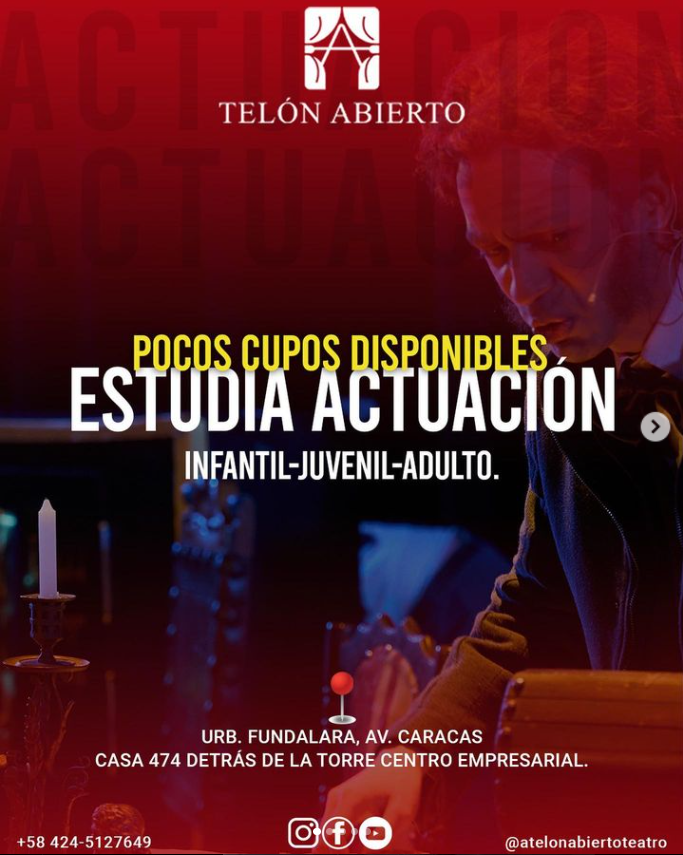
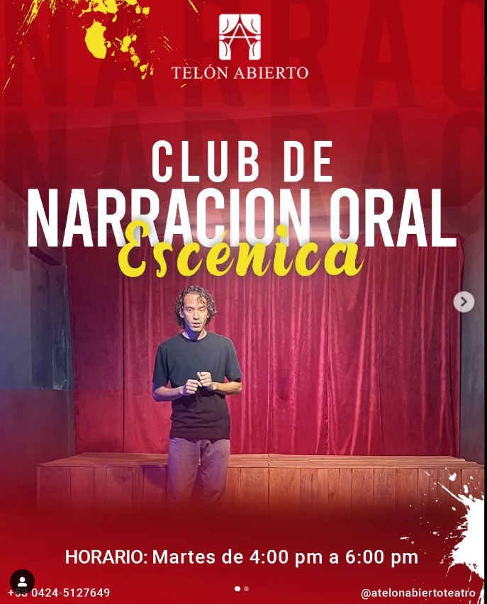
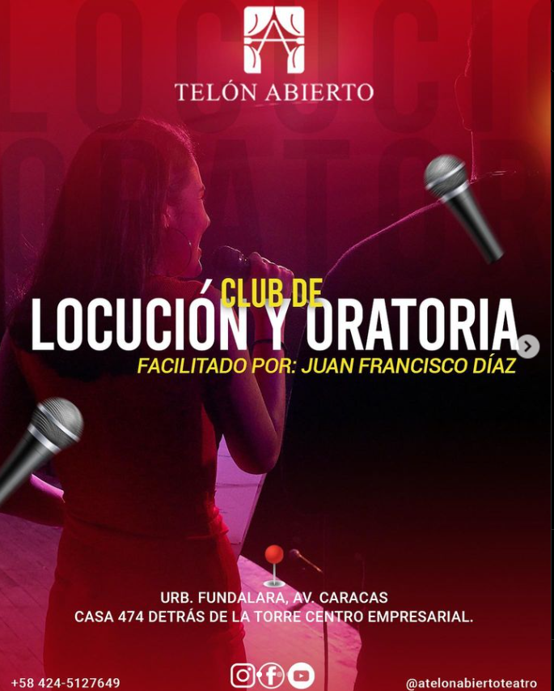

Próximamente
¡Somos!
A TELÓN ABIERTO
Nuestra ultima produccion

Faltan
99
Meses
23
horas
12
Minutos
12
Segundos
Ven y abre el telon con nosotros!
Cada inicio de año hacemos casting para darle oportunidad a nuevos talentos de formar parte de nuestro staff de actores
.png)
.png)
.png)
- 
- 
Presentamos propuestas de diferentes generos para dignificar el teatro en nuestra reguión
Forma parte de nuestra academia!
Formamos actores en diferentes disciplinas para enriquecer sus conocimientos a la hora de la practica teatral
-

ESTUDIA ACTUACIÓN pocos cupos disponibles✅
A Telón Abierto abrió sus inscripciones para ti y para los jóvenes de la casa.🎭 -

🤩Te invitamos al CLUB NOE
CuentaCuentos para enseñar -

CLUB DE LOCUCIÓN Y ORATORIA🎙️
Te paraliza el miedo cuando tienes que presentar una propuesta laboral, exponer en clases y cualquier otra ocasión que implica hablar en público; con sólo dos horas semanales y con una mínima inversión, podrás capacitarte para ser un profesional de la palabra; incorpórate a nuestro Club de Locución y Oratoria